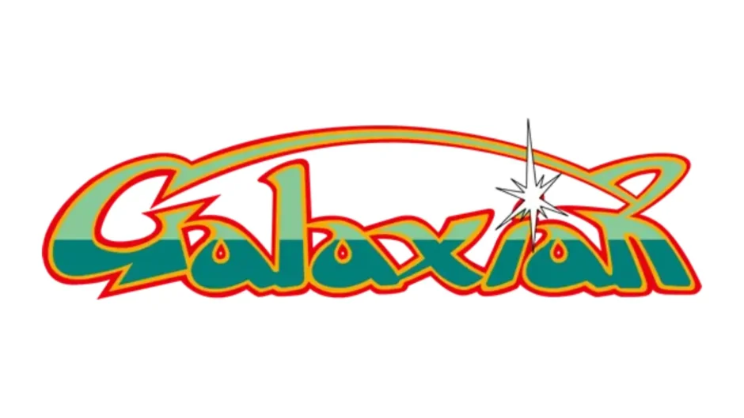

自己紹介
横浜デジタルアーツ専門学校 2年 ゲーム科
吉村 竜希
| 生年月日 | 2006年1月23日 |
|---|---|
| 趣味 | ゲーム、動画編集 |
| 資格 | CGクリエイター検定ベーシック・情報検定情報活用試験3級 |
開発実績
じしゃ君冒険記
テストプレイ中の動画
| 内容 | |
|---|---|
| プラットフォーム | Windows PC |
| 言語 | C# |
| 開発環境 | Unity |
| 制作人数 | 4人 |
| 制作期間 | 5ヶ月 |
概要：現在制作中の3Dパズルアドベンチャーゲームです。磁石のくっつく能力を利用してギミックをクリアして先に進んでいくゲームです。
左の動画では、コントローラーのRまたはLを押すことでプレイヤーの磁極(S極またはN極)を切り替えることができます。 プレイヤーの磁極とオブジェクトの磁極によって引き寄せるか引き寄せられるかを判定しています。
スピードラン
| 内容 | |
|---|---|
| プラットフォーム | Android |
| 言語 | C# |
| 開発環境 | Unity |
| 制作人数 | 1人 |
| 制作期間 | 2週間 |
概要：スマホ向けに作成したゲームです。タップの仕方で2種類のジャンプを出すことができ、それを駆使して早くゴールを目指すスピードランゲーム。
アピールポイント：先行入力処理を導入して、プレイヤーがストレスなくジャンプできるように作成しました。
ミニクラッシュ・ロワイアル
| 内容 | |
|---|---|
| プラットフォーム | Windows PC |
| 言語 | C# |
| 開発環境 | Unity |
| 制作人数 | 1人 |
| 制作期間 | 1ヶ月 |
概要：現在制作中の「クラッシュ・ロワイアル」を参考にしたミニ版です。本来レーンが三つあるのを一つにしています。
アピールポイント：Netcode for GameObjects(NGO)を使用してオンライン通信機能を開発しています。 現段階ではローカル環境でのホスト/クライアント通信の動作確認まで完了しており、インターネット経由でのオンライン対戦については今後実装予定です。
ギャラクシアン(再現)

| 内容 | |
|---|---|
| プラットフォーム | Windows PC |
| 言語 | C# |
| 開発環境 | Unity |
| 制作人数 | 4人 |
| 制作期間 | 3ヶ月 |
概要：1年次に初めてゲーム制作をした際に制作したゲームです。2Dシューティングゲームです。
アピールポイント：レッドエイリアンの追従処理、プレイヤーに向かう処理を作成しました。